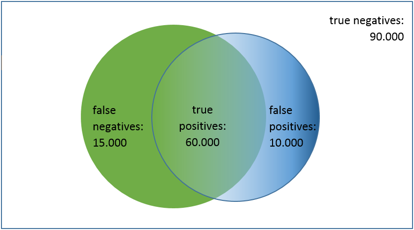

Precision and recall are used to evaluate how well the classifier performs. If the classifier reaches a high precision and a high recall, you will have found (almost) all responsive documents. The found documents are of a high quality and a high quantity. In other words, the classifier is returning accurate results, as well as returning a majority of all responsive results. Sometimes it is more important to correctly classify your documents than getting all of them (high precision, lower recall). Sometimes it is more important to get all responsive documents than getting all of them correct (lower precision, high recall).
In a project you will have a selection of documents that might be responsive (the presumed positives) for a specific issue. They are selected by the classifier (the blue circle on the right in the graph below). After review, a selection of those documents is identified as truly responsive (the true positives). The other selected documents are, counter to expectations, not responsive (the false positives). The review results of each new training batch enable the classifier to select the presumed positives more accurately.
The documents in the project that are not selected by the classifier are considered not responsive (the presumed negatives). A selection of those documents will be responsive (the false negatives). The other documents are, as expected, not responsive (the true negatives).
It is important to understand, that only the documents in the green circle on the left are the truly responsive documents (the actual positives) in the project.
All documents in the project (positives and negatives) are inside the rectangle (90.000 + 15.000 + 60.000 + 10.000 = 175.000).

Precision = quality = #responsive found / #found = true positives / (true positives + false positives)
For the review results in the graph displayed above, the calculation will result in a high precision of 86%:
60.000 / (60.000 + 10.000) = 0,86
The classifier correctly classified 86% of the selected documents (in the blue/right circle) as responsive.
Recall = quantity = #responsive found / #responsive = true positives / (true positives + false negatives)
For the review results in the graph displayed above, this calculation will result in a high recall of 80%:
60.000 / (60.000 + 15.000) = 0,8
The classifier found 80% of the responsive documents present in the project.
The problem with the recall calculation is, that you do not know the exact number of truly responsive documents (the documents in the green/left circle) until all documents in the project have been reviewed. The solution is to use a Validation Set to hold your training results against. This will result in an Estimated Current Recall per issue. If you have created no Validation Set for your project, you cannot calculate the estimated current recall of an issue.